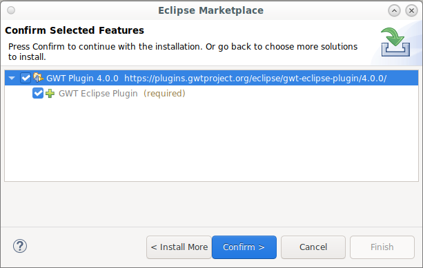

This covers install the GWT Eclipse Plugin 3.0.0+.
This plugin is of Beta quality. If you want to use the GPE-Fork, please goto the GPE-Fork download.
GWT Eclipse Plugin (V3)
This plugin will be released November 2016.
Plugin Features
The available GWT Eclipse Plugin features.
- GWT Eclipse Plugin - Required
- GWT 2.7.0 SDK - Optional
- GWT 2.8.0 SDK - Optional
- JavaScript Debugger with Source Mapping Support - Optional and Recommended
Plugin Feature Conflicts
Uninstall the Google Plugin for Eclipse (GPE or GPE-Fork) before installing.
Install Options
There are three install options below. The easiest option is to install from the Eclipse Market Place using either #1 or #2.
1. Use the Drag and Drop Install Button
Drag and drop the install button into Eclipse.

Then choose the features to be installed. 
2. Install from the Eclipse Marketplace
Go to the Eclipse Market Place and search for GWT.
First goto the Eclipse Market Place. 
Then Search for GWT and install the features. 
Then Choose all the features you want to install.
Don’t forget to become a Star Gazer by clicking on the like button! 
3. Update Site
Use the update site to install the features.
First goto Install New Software. 
Then add the update site and name it GWT Eclipse Plugin. 
Copy and paste this update repository url and paste it into the Work with in the Eclipse dialog and click enter. http://storage.googleapis.com/gwt-eclipse-plugin/v3/release
Google Cloud Features
If you’re looking for the features like (GPE) Google Cloud features such as App Engine Integration, then you’ll want to install the Google Cloud Tools Pluing.
Goto https://github.com/GoogleCloudPlatform/google-cloud-eclipse